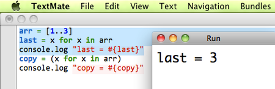

{% include JB/setup %}
{% raw %}
<div>

<h2 id="sec.editors" class="calibre13">1.2 Text Editors for CoffeeScript</h2>
<p id="N104FA" class="calibre5">
      An up-to-date list of text editors with CoffeeScript support can be found at <a href="http://github.com/jashkenas/coffee-script/wiki/Text-editor-plugins">http://github.com/jashkenas/coffee-script/wiki/Text-editor-plugins</a>. If you’re on a Mac, I recommend the TextMate plugin maintained by Jeremy Ashkenas himself.<a id="FNPTR-22" href="f_0016.html#FOOTNOTE-22">[22]</a> As of this writing, there are also plugins for Vim, Emacs, gedit, jEdit, and IntelliJ IDEA.
      </p>
<p id="N10518" class="calibre5">
      Recently, it’s become viable to code with a web-based text editor, enabling real-time collaboration and freeing you from any particular device. Currently, the web-based editor with the best support for CoffeeScript is Cloud9, with the Cloud9 Live CoffeeScript Extension.<a id="FNPTR-23" href="f_0016.html#FOOTNOTE-23">[23]</a>
</p>
<p id="N10527" class="calibre5">
      Of course, you can use any editor you like, but using an editor with CoffeeScript support gives you three big advantages: syntax highlighting, smart indentation, and built-in compilation shortcuts. The first two are easy to appreciate, but the last is something many coders fail to take advantage of.
    </p>
<table class="figure" id="fig.textmateRun">
<tr class="calibre8">
<td class="calibre10">

</td>
</tr>
<tr class="calibre8">
<td class="calibre19">
<hr class="calibre20"/>
<b class="calibre21">Figure 2. Running selected code directly from TextMate</b>
</td>
</tr>
</table>
<p id="N10534" class="calibre5">
      In TextMate, I can use <span>⌘</span>R (“Run”) to run a CoffeeScript file, or <span>⌘</span>B (“Build”) just to look at the compiled JavaScript. Compilation takes mere milliseconds, so if I’m not sure how a CoffeeScript expression translates into JavaScript, a quick build is the fastest way to find out. If text is selected, these commands run on the selection instead of on the whole file, which makes it a lot easier to test pieces of code and nail down syntax errors.
    </p>
<p id="N1053F" class="calibre5">
      One quick caution—some editors (including TextMate) don’t pick up <code class="cf">PATH</code> by default, which means you get an error like <code class="cf">command not found</code> when it tries to run <code class="cf">coffee</code>. If you run into this problem, go into your editor’s preferences (perhaps under Shell Variables) and set <code class="cf">PATH</code> to match the output you get when you run <code class="cf">echo $PATH</code> in your shell. You might want to set <code class="cf">NODE_PATH</code> while you’re at it.
      </p>
<script src="scripts/book_local.js" type="text/javascript" class="calibre2"/>
</div>

{% endraw %}

